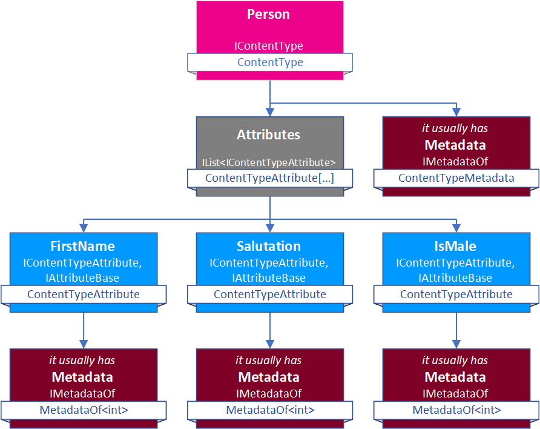
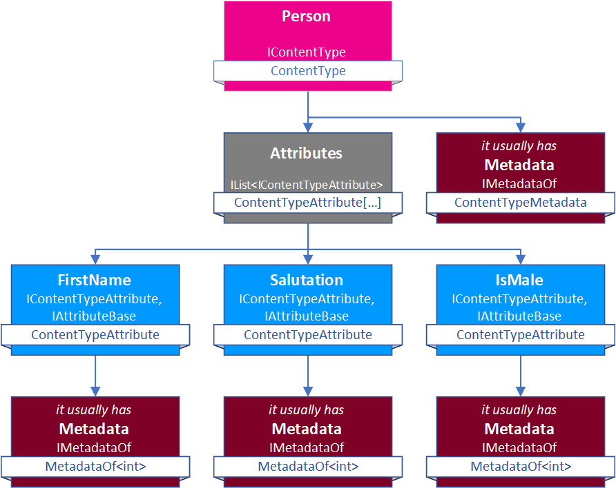

Namespace ToSic.Eav.Data
The EAV Data system underlying 2sxc is the core data management system, in charge of Entities and such. For long term stability, we only use interfaces in the API.
To better understand this stuff, best read about the Understanding Data....
 

In most cases you only care about the IEntity interface and things below that.
Namespaces
Interfaces
- IAttribute
Represents an Attribute with Values - without knowing what data type is in the value. Usually we'll extend this and use IAttribute<T> instead.
- IAttributeBase
Represents properties we should know about Attributes. This is the base for both
- IContentTypeAttribute (in the IContentType)
- attribute with values-list (in the IEntity)
- IAttribute<T>
Represents an Attribute (Property), but strongly typed
- IContentType
Represents a Content Type information (the schema) used for IEntity objects.
- IContentTypeAttribute
Represents an Attribute definition in a ContentType. This is the base for attributes in IContentType
- IConvertEntity<T>
Convert an entity into another format
- IConvert<TFrom, TTo>
Interface which converts one type into another, or a list of that type into a list of the resulting type. Commonly used to convert entities to dictionaries etc.
- IDecorator
This marks add-on information for things which can be decorated. This allows taking something (like an IEntity and adding additional information for later processing
- IDecorator<T>
This marks add-on information for things which can be decorated. This allows taking something (like an IEntity and adding additional information for later processing
- IDimension
Represents a Dimension to assign values to. Dimensions are usually languages (ILanguage), but in future they could also be multi-dimensional, like values which are mapped to a language and to a specific edition, use case, etc.
- IEntity
The primary data-item in the system, IEntity is a generic data-item for any kind of information. Note that it inherits IEntityLight which is the basic definition without languages, versioning, publishing etc.
We recommend you read about the Understanding Data...
- IEntityLight
Represents a light Entity, which is a very basic entity without multi-language capabilities, versions or publishing. For the more powerful Entity, use IEntity.
- IEntityRelationships
Manages relationships of an entity - to its children and parents.
- IHasDecorators<T>
This marks objects which carry additional decorator information
- ILanguage
Represents a Language Dimension. It's identical to an IDimension for now.
- IValue
Represents a Value in the EAV system. Values belong to an attribute and can belong to multiple languages.
- IValueConverter
Marks objects that can convert values - like "file:22" to "/images/logo.jpg" and back.
- IValue<T>
Represents a Value with a specific type (string, decimal, etc.).
Enums
- ValueTypes
Value / Attribute Type List